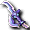
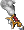
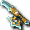

提供情報或編輯請求，請到情報提供公佈欄、編輯公佈欄。
這是單人幾乎不可能做到AC-100的職業。
即使組隊，如果沒有裝甲輔助或精挑細選的裝備也很困難。
在能裝備天上裝備之前的培育狩獵場，稍微降低AC所受傷害也差不多，
所以到91為止，培育用裝備選擇DEX高的比較好。
阿修羅比起一般Lv，能使用到哪個技能的影響更大，請留意這一點。
Lv1～20
到Lv11為止在盧亞斯森林2打小烏鵝即可。
Lv5可習得的克萊茲、
克萊茲SLv10可習得的費爾克萊茲，
先在魔界村購買。
到了Lv11，手環用野蠻人骷髏，腳用金鞋。
Lv11的職業帽與其他職業不同補正很弱，所以如果能入手的話
巴西利烏斯冠比較優秀。沒能入手的話，作為備用持有也算可行。
技能的習得方式應該會以SLv制為主。
從Lv11開始提升SLv。
狩獵場推薦魔窟2。
會得到菲勒，所以在拿到之前加油吧。
從盧亞斯森林2移動到交流廣場購買魔窟傳送門。
如果善惡提升到某個程度後轉職，在盧亞斯森林3也能無壓力狩獵。
用快速藥水連打克萊茲。
克萊茲的SLv達到10後就習得費爾克萊茲。
※如果將來無論如何都想在學會阿斯蘭鐮刀的同時就使用，
雖然是相當艱辛的荊棘之路，但可以努力讓Lv=SLv直到習得卡塔爾鐮刀，
並在圖納因戴爾在Lv上封頂的期間，
提升跟隨因戴爾和融化因戴爾，也是一種方法。
從Lv5開始相當斯巴達，Lv12就能習得費爾克萊茲。
Lv21～40
因為藥水籌措容易且技能容易提升，推薦伊卡魯斯左邊的遺跡。
不過菲亞斯媽媽馬德和強力三角龍在這個等級帶前期
應該很吃力，所以不要理會比較好（藥水消耗會相當可觀）。
優先練等的話是魔窟29。
不過後者遠距離很嚴苛，所以海市蜃樓地圖和HP藥水（或付費支援守護）大量，以及
撤退用的傳送門一定要帶。
不要理會火焰飛龍。
費爾克萊茲SLv23可習得丘歐克萊茲。
Lv41～50
因為藥水籌措容易且技能容易提升，推薦卵巢4。
順帶一提，會得到可附魔且帶有HIT的古代之刃，所以就直接裝備吧。
習得是之後的事，不過如果出了時鐘迪卡普馬就先拿著比較好。
另外，Lv50起可以使用雙持。
武器攻擊力只反映右手。其他能力值則兩手都會反映，
所以右手裝備武器攻擊力高的，
左手只看STR、DAM、HIT等附魔，綜合挑選好的來裝備。
不過，武器攻擊力的影響並沒有傳言中那麼大，所以不要只憑attack值判斷，
建議在能裝備的範圍內，兩手都裝備附魔好的東西。
丘歐克萊茲SLv35可習得圖納因戴爾。
Lv51～70
從這裡開始使用的技能，會依技能是用Lv制還是SLv制習得而有所不同。
Lv51可習得的跟隨因戴爾不會成為最終技能，
1:1提升技能很辛苦，所以融化因戴爾建議用Lv制。
如果能調到Lv制融化因戴爾，就不需要提升跟隨因戴爾，
所以繼續使用丘歐克萊茲，在Lv65之前習得圖納因戴爾，
之後只連打圖納就好。
（不習得融化因戴爾而以Lv制習得卡姆魯索瑪的情況也一樣）
不過未必流通很多，所以如果融化因戴爾要用SLv習得，
就得去提升跟隨因戴爾。
Lv65習得Lv制圖納因戴爾之後，圖納和跟隨兩者都用吧。
圖納因戴爾可以從所有被擊中的敵人身上取得技能經驗值，
所以最好聚集2～3隻來打。
 圖納因戴爾、卡塔爾鐮刀即使正面沒有敵人也能攻擊。
圖納因戴爾、卡塔爾鐮刀即使正面沒有敵人也能攻擊。
利用這一點故意轉45度方向再使用技能，
就會變成側面判定，能造成正面1.25倍？的傷害。
暴擊率也會提高，SLv低的時候很開心，但缺點是受到的傷害也會增加。
不過，如果穿插跟隨等單體攻擊，正面沒有敵人當然就無法使用單體攻擊，
所以想同時提升單體攻擊的技能等級時，這個戰法並不適合。
總之，從習得圖納因戴爾開始，狩獵效率會大幅提升，阿修羅也會變得有趣。
狩獵場可從卵巢、火山1、不可思議區域、冰之城前半（收集FW材料）、惡魔島（收集阿修羅技能）、
火山洞窟（修道士之間有取得地圖的話）等，依喜好和自己的實力選擇適合的地方。
不過建議是，依能力值加點等而定，由於火力比其他前衛職業高，惡魔島5的
大嘴多嘴鳥也有可能打不太到。如果想為了提升技能等級而多打幾下，
需要下點工夫，例如脫掉STR裝備、拿掉勳章、只用單手拿低等級武器等。
即使如此技能等級的賺取效率還是不好的話，火山1會比較好（特別是預定用
SLv制習得單體技能的情況）。
對於到91為止都還沒實裝光服（？）的阿修羅來說
↑截至2011.2，已確認71、81光服會掉落
Lv51可裝備的騎士帽or艾莉絲服似乎是不起眼的好東西，
有的人可以列入選項。
圖納因戴爾SLv55可習得卡塔爾鐮刀。
Lv51習得跟隨因戴爾。
Lv55習得阿克艾提斯。
Lv71～79
戰耳、71手環裝備後火力會提升。
如果有當修道士時使用過的東西，請保存到這個時候。
有魔王護脛的人也能獲得一定程度的耐久。
目前迪斯護脛的可裝備職業欄上沒有寫「阿」，但可以裝備。
如果沒有取得Lv制卡姆魯索瑪的門路，
就只能提升融化因戴爾了。
與至今的技能不同，融化因戴爾無法單一連打了。
火力會下降，但和圖納或卡塔爾交替混用，腳踏實地地提升吧。
2009/9/10的改版起無法連打卡塔爾，必須混用某個技能。
如果能取得Lv制卡姆魯索瑪，就不需要提升融化的SLv，
雖然有在卡塔爾之間夾入圖納因戴爾就能維持範圍火力的好處，
但是否特地去取得Lv制卡姆魯索瑪，應該是看個人喜好。
在現行規格下，昇天到天上界不需要火焰彎刀，
但由於光環彎刀的性能優秀，還是做一把FW比較好。
※不過能轉換成光環彎刀是昇天之後
從這個意義上來說，在冰之城前半收集材料也不錯。
融化因戴爾SLv42可習得卡姆魯索瑪。
卡塔爾鐮刀SLv50可習得阿斯蘭鐮刀。
Lv71習得賽斯、尤蘭艾提斯。
賽斯是阿修羅的自我輔助技能中唯一能提升AAR的。
而且幾乎與其他職業的輔助重疊，所以單人・組隊都能用到最後。
無論是靠自己掉落還是購買，請盡早習得。
尤蘭艾提斯屬於興趣領域，掉落的怪物也少，所以除了INT阿修羅以外不必勉強習得。
Lv80～85
確實單人的話在這一帶就能習得阿斯蘭鐮刀，
但如果事前沒有先打出卡姆魯索瑪就無法發動（和冥幻之型一樣會出現圖示）。
預定以SLv制習得卡姆魯索瑪的話，繼續提升融化因戴爾的SLv吧。
即使習得卡姆魯索瑪也有連續使用時間限制，所以單獨提升SLv很困難。
※不像有延遲的融化那樣能硬著頭皮連打
因此要和其他攻擊技能組合連段來提升。
Lv81的職業帽可附魔，與王冠和冠冕相比能賺到AC，
但HP補正較低，所以用不用應該是看個人喜好。
卡姆魯索瑪SLv48可習得時鐘迪卡普馬。
Lv83習得詛咒。
由於一般認為阿修羅的AC偏低，
組隊時如果什麼都不說，聖職者應該會幫忙施放鎖定。
鎖定會抵銷詛咒，所以想重視MC的話，請告知不需要。
Lv85～90
擁有好附魔的巴巴手環或弗利耶爾的人，耐久・火力都會穩定。
如果在雷皮翁取得了地圖，也可以窩在火山洞窟專心提升本體Lv。
順帶一提敵人等級是70，所以到SLv50為止都能得到足夠的技能經驗值。
到這個時候，應該已經能發動阿斯蘭鐮刀了。
阿斯蘭鐮刀沒有暴擊判定，
但技能攻擊力高，且能攻擊自己全周圍，是相當好用的技能。
對於暴擊不太容易出的對象也能打出穩定的傷害。
不過，組隊時不假思索地使用阿斯蘭，也會吸引過多仇恨。
那種時候請改成不使用阿斯蘭的連段等，
多觀察周圍，避免變成墓碑。
昇天到天上界需要托納爾，
但沒有購買資金又無法用其他角色製作的話，只好用阿修羅去冰之城後半。
瀕死時會逃跑，沒有遠程攻擊是不利的，但火力很高，所以意外地能打倒。
Lv90習得特萊因，以及用國王之心習得阿克雷奈特。
阿克雷奈特是除了AC輔助之外，還能提升約1成造成傷害的優秀技能。
（能力值解析中AC沒有變化，所以以PC來說是ADDown值減少嗎？）
雖然不太為人所知，但也會增加魔法造成的傷害。
消耗MP稍多，但對HP多或堅硬的對手要積極使用。
輔助的持續時間與特萊因等自我輔助相同，所以需要不中斷的時候要留意。
不過與其他一般的弱化輔助不同，也會發生未命中，請注意。
會未命中的對象是固定的，主要是魔王系（會中的對象不會未命中而確實生效）。
怪物城堡及異次元的魔王、天上3次的賢者、 緹亞潔、
緹亞潔、 帕斯托爾、烏爾修萊茵、
帕斯托爾、烏爾修萊茵、 阿瑟拉，
阿瑟拉，
9格魔王的中心（赫爾西翁、天上4次；周邊的格子不會未命中）、賽佩的幻影騎士和迪奧特等。
提升命中率的方法大概沒有，所以只能連打到輔助生效為止。
即使未命中也會消耗MP，所以沒有一直放著付費支援守護的話要注意MP剩餘量。
Lv91～99
即使卡姆魯索瑪沒有練起來，Lv91也能習得時鐘迪卡普馬。
除非執著於SLv把卡姆魯索瑪練到SLv48，否則一定是Lv91比較早。
這不是太難出的技能，所以建議自己去打等方式事先準備好。
因為是需要犧牲HP的風險技能，
自己同時被多隻敵人攻擊的狀態下不應該使用。
除了要挑場合之外，還有18秒的使用限制和不是必中的規格，所以比艾克斯塔更難提升SLv。
因此面對高DEX的對手時暴擊很難出，不使用也許反而更強。
目前唯一的光服是Lv91的。
↑現在雖然掉落稀少，但Lv71、Lv81的光服也有掉落的報告。
在解除天上服之前，Lv91光服會是主力裝備，請務必入手。
Lv91可以昇天到天上界，不過只要提升善惡等級HP就會上升，
而且裝備解除鎧甲與升級過的武器後，HP和AC會相當穩定。
現身與變身組合後火力會大幅提升，所以請積極提升善惡。
另外一般來說現身會使造成傷害上升，
但請注意阿斯蘭鐮刀與現身前相比完全沒有變化。
Lv95可習得卡普蘭艾提斯，但實用性不足，不一定要學。
Lv100～105
・單人練功地點：
・PT練功地點：
・備 註：
Lv106～120
・單人練功地點：
・PT練功地點：
・備 註：
為了成為最強的阿修羅
對阿修羅來說火力高是理所當然的，
要追求更高的火力，還是要具備一定程度的堅固，
裝備的選擇也會隨之改變。
不管哪個前衛都一樣，特別重要的能力值是
HP・MP・SP（越高越好。不過MP主要用於阿克雷奈特和遠距離技能）
AC・MC（越接近-100越好）
STR・DEX・CON・DAM・HIT（越高越好，不過目前CON對造成傷害沒有影響）
就是這些。
從這個觀點，想考察一下最終的理想裝備。
不妨考慮重視的點與平衡來挑選。
護符
基本用善惡勳章就好。
面對全是無屬性的敵人時換屬性利比，面對與自己善惡屬性相同的敵人則換無利比，這樣更換比較好。
討伐赫爾西昂等面對強敵打長期戰時，用符合該屬性的屬性利比來打效率最高。
如果有盜賊或魔術師幫忙變更屬性，只要準備善惡勳章＋1種屬性利比就好，可以省事。
另外這只限於以現身消耗氣力的時候，
阿修羅沒有特別突出的強力武器，而且技能攻擊力高，相對上武器Attack的影響較低，
所以3次～4次的變身，火力會是「變身+現身+天上彎刀+善惡勳章」＞「現身+平常使用的彎刀+屬性利比」。
3次～4次變身
「變身+現身+天上彎刀+善惡勳章」＞「現身+終極彎刀+屬性利比」＞「現身+終極彎刀+善惡勳章」
2次變身
「變身+現身+天上彎刀+善惡勳章」≒「現身+終極彎刀+屬性利比」＞「現身+終極彎刀+善惡勳章」
1次變身
「現身+終極彎刀+屬性利比」＞「現身+終極彎刀+善惡勳章」＞「變身+現身+天上彎刀+善惡勳章」
耳環
通常是高DAM附魔戰耳唯一選擇。
不過阿修羅在AC上有弱點，所以像是一直死掉造成別人困擾時，或
擔任外圍釣怪志工時，偶爾也有適合裝備HP耳環或AC耳環的場合。
 帽子
帽子
| AC | MC | STR | DEX | HP | SP | 其他 | 備註 | |
| 百鬼王冠＆頭冠 | -5 | -10 | +2 | +2 | +200 | +100 | MP+100,INT+2WIS+2,CON+2 | |
| 職業帽子 | -12 | -6 | +2 | +4 | +50 | +40 | CON+4,INT+3MP+40 | |
| 赫爾西昂前衛帽 | -6 | -6 | +4 | +4 | +170 | +50 | CON+4 | 任務取得 |
| 3次解除帽子 | -6 | -5 | +4 | +4 | +140 | +110 | CON+4 | 每UG1階段附魔ADD+2～4 |
| (真)斯科爾兜 | -12 | -9 | +9 | +9 | +191 | +100 | 專屬裝備 |
光看AC補正的話，職業帽最優秀。不過HP補正稍嫌不足。
王冠・頭冠的HP補正很好。百鬼產的有期限但容易入手。
付費抽獎產的王冠・頭冠沒有期限，還有更高性能的。
赫爾西翁前衛帽能力平衡很好，所以如果能入手，可以用到3次解除帽為止。
最終請裝備將3・4次解除帽附魔・UG過的東西。
武器
| 武器攻擊力 | DAM | HIT | STR | DEX | HP | 其他 | 備註 | |
 命運奎萊克 | 36~40 | - | +10 | - | - | 100 | CON+10 | |
 泰特拉彎刀 泰特拉彎刀 | 42~70 | - | - | - | - | - | - | 性能取決於附魔 |
 光環奎雷克 | 43~48 | 8 | - | +4 | - | 80 | SP+80,CON+6 | |
 賽勒西斯彎刀 賽勒西斯彎刀 | 35~38 | 7 | 3 | - | - | 100 | CON+5混亂防禦120次 | |
 蒂亞雷德奎雷克 | 52~57 | +7 | +11 | +5 | +2 | 200 | SP+120,CON+7混亂防禦200次 | |
 究極奎雷克 究極奎雷克 | 140~170 | +7 | +5 | +3 | +3 | 30 | SP+100,MP+30CON+3critical 1%中毒防禦50次 | |
| 天上3次解除彎刀 | 48~56 | +7 | +6 | - | - | 180 | SP+100,CON+6 | 升級可再加HP,SP+150 |
| (真)雷歐加爾特彎刀 | 182~203 | +13 | +9 | +4 | +3 | 264 | SP+150,MP+30CON+8critical 5%ASPD 3% | |
| (真)斯科爾菲吉彎刀 | 172~207 | +11 | +7 | +3 | +2 | 383 | SP+120,MP+30CON+7critical 3%ASPD 2% | |
| 迪卡魯尼克奎雷克 | 111~143 | +11 | +14 | +12 | +8 | 240 | SP+140CON+11中毒防禦200次 |
一般的選項會是天上解除彎刀、蒂亞雷德彎刀、終極彎刀吧。
3次・4次解除彎刀只要升級，能賺到最多的HP。
蒂亞雷德彎刀HIT和STR高，HP也不錯，還有混亂防禦，綜合表現優秀。
終極彎刀武器攻擊力高，如果能製作出來，裝備在右手比較好。
上述彎刀難以入手的話，天上1次・2次解除彎刀，
或命運彎刀、光環彎刀、塞萊西斯彎刀等也不錯。
極限彎刀武器攻擊力最高，但不能附魔，無法附魔DAM。
除了特別面對AC高的MOB時，或以聖的解放為主的狩獵外，不推薦。
泰特拉彎刀要付出大量勞力和時間作為回報，
雖然要看運氣，但可期待STR・DEX大幅提升，以及AC・MC・HP的墊高。
以AC・MC・HP的附魔彌補阿修羅防禦薄弱的弱點這點也很有魅力，
而且兩手都能裝備武器，所以泰特拉武器的存在對阿修羅比其他職業更有意義。
裝備兩把泰特拉也行，右手終極左手泰特拉的組合也行，
如果能附魔到ELv999，肯定會成為最終裝備。
身體防具
91光服（梅廷法維因・蘭法斯）、善惡服、火龍服、赫爾西服，能製作的話泰特拉UG服，會是其中之一。
| AC | MC | HP | SP | STR | DEX | Wei | 其他 | 備註 | |
| 泰特拉服 | -33 | -44 | - | - | - | - | 0 | AAR+16,SAR+8 | |
| 91光服 | -35 | -17 | 50 | 50 | 4 | 3 | 21 | Con+6,INT+1 | |
| 天上3次服 | -40 | -23 | 160 | 160 | - | - | 27 | ||
| 火龍服 | -37 | -27 | 100 | 50 | - | - | 22 | MP+50,中毒防禦(50) | 升級可附魔HP+0~20ADD・MDD+0~5 |
| 赫爾西服 | -42 | -26 | 150 | 85 | - | - | 27 | MP+85 | |
| 盧尼克前衛服 | -46 | -36 | +130 | +100 | - | - | 25 | AAR+5 | |
| （真）雷歐鎧 | -52 | -38 | +178 | +121 | - | - | 26 | AAR+5,SAR+4 | |
| （真）斯科爾鎧 | -55 | -39 | +192 | +110 | - | - | 26 | AAR+6,SAR+5 |
善惡服雖然有HP・SP附魔，但未解除的話與光服的附魔差不多，
所以從有SD附魔的光服換過來幾乎沒有好處。
如果已解除，與赫爾西翁服一起在追求AC或HP時很不錯。
泰特拉服WEIGHT為0。相較於其他2個選項，有多賺近20負重的優點，
MC比其他高出一截，又附有SAR，在遠距離攻擊多的狩獵場特別能發揮威力。
火龍服除了OP附魔品之外，是唯一能靠升級讓衣服附魔ADD、MDD的。
UPG成功率是100%，但鱗片本身難以入手是缺點。
因中毒防禦，不必在意猛毒導致的HIT下降也是優點之一。
依自己的能力值、與主要狩獵場敵人的相性適當選擇吧。
不過與修道士不同，目前CON不影響造成傷害，所以附魔的CON變成廢屬性很可惜。
 腰帶
腰帶
善惡屬性都已解除的天上束腹不錯。
不過，MC等地方特別多使用暗黑攻擊的敵人，所以善屬性的話要注意。
在對自己善惡相反屬性攻擊多的狩獵場，換成羅達或機械腰帶吧。
戒指
當然是附魔STR・DEX盡可能高的東西，
為了盡量確保AC，地上的附魔戒指的話想堅持AC5。
如果能維持含裝備CON100就能無效化猛毒，所以CON附魔也非常有效。
 護膝
護膝
成長途中持續使用食人魔腳鍊・德魯伊腳鍊，
最終從魔王護脛、善惡護脛、火龍護脛、 巴風特斯佩特、七重斯彭達中選擇。
巴風特斯佩特、七重斯彭達中選擇。
| AC | MC | STR | DEX | CON | HP | MP | SP | AAR | SAR | 備註 | |
| 首領護脛 | -14~-18 | -8 | 0 | 0 | 0 | 20or30 | 20~80 | 20~80 | 5~26 | 5~26 | 依附魔值，最貴的MP或SP、AAR或SAR的其中一邊 |
| 善惡護脛 | -5~-12↑ | -2~-7↑ | 0 | 0 | 0 | 10~50 | 0 | 0 | 29↑ | 20↑ | 附魔高的東西是4次（解除），裝備條件最嚴苛 |
| 巴風特斯佩特 | -8~-12↑ | 0 | 0 | 0 | 0 | 0 | 0 | 0 | 24↑ | 0 | 入手只有裝備彩券，防禦AAR異常 |
 赫普塔斯本達 赫普塔斯本達 | -4 | 0 | 4 | 4 | 4 | 0 | 0 | 0 | 0 | 0 | Q:古代人的數字-朋友 |
| 火龍護脛 | -4~-12↑ | -3～-5↑ | 0 | 0 | 0 | 0 | 0 | 0 | 25~35↑ | 15~25↑ | 暗黑防禦 |
重視AC的話魔王護脛（莫諾・迪斯護脛）不錯。當然是AC高附魔、AAR型。
重視AAR的話已解除的善惡護脛之類，或巴風特斯佩特也可以。
這些也有可能靠附魔提升性能。
依狩獵場，重視火力的話唯一能提升SDC的七重斯彭達也不錯。不過其他附魔低，耐久會下降。
最重視AAR的話，努力入手火龍護脛吧。
光是素材蛇鱗腳鍊就很難入手，但性能上是巴風特斯佩特的上位互換。
HP和AC等雖然不如魔王護脛，但預設就附有AAR25。
遺憾的是入手難度也超過魔王護脛。
如果透過UG附魔ASPD，善惡護脛在攻守兩方面的平衡應該很好吧。
 手環
手環
重視AARSAR的話是舊護甲腕環（附魔被當作衣服盾牌處理。可用甲殼提升AC，用詛咒提升AAR等）
完全重視AC的話是舊護甲或維維爾榮格（被當作手套，所以用詛咒附魔AC。不附魔DEX）
稍微重視AC而屬於中間型的是野蠻人腕環（DEX・DAM・HIT高附魔的比較好）
稍微重視HIT的話是破壞護腕(同樣是高附魔的)
完全重視火力的話是舊武器腕環（DAM高附魔的）
就是這些。
雖然難以入手，也有迪捷雷德（蒂亞雷德）腕環這個選擇。
由於附魔被當作手套處理，即使換成蒂亞雷德，SD或HIT的好附魔也輸給布雷克或巴巴手，
但原本就附有MC、ADD、MDD、HP等，視附魔還能提升AC，所以想要耐久力時會很好用。
總之先裝備流通多、容易附魔、平衡也好的野蠻人比較好。
腳環
最終會在迪捷雷德護腳（蒂亞雷德護腳）與自由精靈哥薩克之間二選一。
遠距離不痛的狩獵場或有移動異常狀態的狩獵場就選弗利耶爾。
迪捷雷德護腳與弗利耶爾相比，MC-7・CON+6・HP+20・SP+10・ADD+1較高，
但不會使造成傷害上升，只有HIT是-2，要注意。
如果能做成蒂亞雷德護腳，能力會進一步提升。
守護
1期神祕支援輔助型的守護，單人的話應該是必備的。
把守護的Lv提升到71，只靠緊急用的肉和魔力棒，大多數地方都能單人。
此外，對耐久方面令人不安的阿修羅來說，裝甲搭乘型守護會比其他職業更重要。
如果有餘裕培育2期神祕支援守護，狩獵會更加順暢吧。
單人時HIT較低，所以1期機動搭乘守護的主人命中，在天上2次或MC4等地方很好用。
不過，範圍技能的技能等級容易提升，所以最終要與能確保的DEX值商量。
裝備・SD・技能Lv目標
從上述裝備範例來看，基礎品會因狩獵場和喜好而異，不過採用了被認為是最終目標的東西。
當然如果以最強阿修羅為目標，裝備的附魔必須瞄準更高。
不過為了避免不切實際的附魔值，記載的是只要相當程度地投入就不是不可能的附魔值。
※泰特拉武器因附魔不定而排除。另外，以最強阿修羅為目標時，不考慮裝備條件和入手難易度。
※目前不必執著於解除3次彎刀。
另外，UG的數值至少在3次時每1段最多附魔4，所以上限有可能提高。
此外，鞋子換成蒂亞雷德可以進一步強化能力值。
武：解除3次彎刀5段UG
(DAM16附魔)(攻48～56,DAM+7,HIT+6,HP180+150,SP100,CON6)
頭：解除4次帽子5段UG
(AC4MC1附魔) (AC-7,MC-6,STR+5,CON+5,DEX+5,HP+160,SP+140,ADD5～15)
頸：解除4次項鍊
(AC-4、MC-4、MP+80)
耳：戰耳
(DAM16附魔) (AC-2 DAM2 STR2 CON2 DEX2)
體：解除4次服5段UG
(AC8附魔) (AC-41,MC-25,HP+170,SP+170,RAC5～15)
腰：解除4次腰帶
(AC-4,MC-4,SP+60)
脛：解除4次護脛5段UG
(AC4MC1附魔)(AC-8,MC-7,HP+60,AAR+31,SAR+22,AtkSPEED5～15)
腕：巴巴手環
(AC4,DEX3,DAM3附魔)(AC-6,DAM+7,HIT+14,CON+6,DEX+8)
足：迪捷長靴
(AC4附魔)(AC-5,MC-7,DAM+7,HIT+5,CON+7,HP+70,SP+60,ADDown1%)
指：合計SD13的AC5戒指
假設能力值加點在CON加4之後全部加到SD，用這套裝備，
Lv99 善惡91時AC-34,MC45,DAM109,HIT45,SD193(SDC240),HP2700前後。
再加上自我・PT輔助。
僅自我輔助（詛咒,特萊因,賽斯）
AC-59,MC30,DAM124,HIT60,SD193(SDC240),HP2700
接受自我輔助＋詩人・騎士輔助（支援,賽夫,全面,特別,龍鱗,指揮）時，
AC-74,MC15,DAM164,HIT100,SD213(SDC270),HP3100
接受自我輔助（詛咒除外）＋詩人・騎士・聖職者輔助（上述＋B救援,祝福,鎖定）時，
AC-89,MC35,DAM164,HIT100,SD213(SDC270),HP5350
更換防禦特化裝備（魔王護脛・職業帽・手環），沒有裝甲輔助也能達到AC-100。
不過如果天上解除裝備上附魔了ADD，優先ADD似乎比較好。
在達到上述裝備之前，應該需要花費相當的時間和勞力，作為過渡，
AC高附魔魔王護脛、赫爾西帽、已UG火龍服、1～2次解除武器・2～3次解除防具值得一考。
到最終裝備為止，入手了也不會吃虧。
戒指和戰耳可以與其他角色共用，所以應該是可以先行砸錢的地方。
手環與其他職業花在魔王手上的費用相比，應該算比較容易做到。
武器需要2把，所以天上彎刀可能是比金錢更花功夫的部位。
頭考慮ADD、脛考慮AtkSPEED(ASPD)而選了解除品，但在意AC的話請用Lv91職業帽或魔王護脛。
關於技能等級，與其他職業一樣，80以上會是一個目標。
範圍技能優秀，所以卡塔爾鐮刀・阿斯蘭鐮刀務必以99為目標。
能把卡姆魯索瑪、時鐘迪卡普馬提升到什麼程度是關鍵。
關於走位
提升裝備和SLv固然重要，
但透過改善走位來提升表現也很重要。
尤其是能否有效率地打中範圍技能，會改變總傷害。
這在單人時要注意很簡單，但組隊中敵人分散時就相當困難了。
這點我認為可以請成員配合等進行指示，但不會因為有火力就了不起。
不只是狩獵效率，更要看如何讓大家一起享受。別忘了阿斯嘉是MMO。
還有一個細節，阿克雷奈特邊跑邊施放以減少時間損失，
就能早一點開始打。除了被多隻敵人包圍的狀況外，養成邊跑邊施放的習慣吧。
即使沒有阿克雷奈特，阿修羅的火力也令人瞠目結舌，
但組隊時不施放阿克雷奈特的阿修羅，就像不丟辣椒的盜賊一樣，會給隊員留下壞印象。
即使有多名阿修羅，也別忘了抱持自己也要做輔助的心態。
從能力值・耐久・走位所有方面，以成為最強的阿修羅為目標吧。